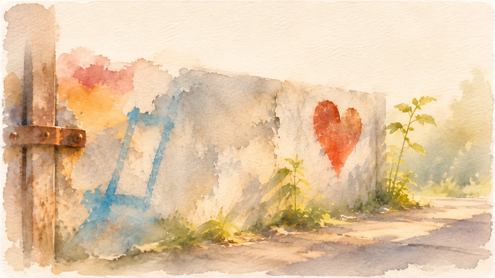

Meine Werte & Haltungen
Konflikte sind kein Fehler
Ich glaube an Klarheit ohne Härte, Verantwortung ohne Schuldzuweisung und Entscheidungen, die von den Menschen getragen werden, die mit ihnen leben müssen.
Ich arbeite nicht auf Harmonie um jeden Preis hin. Unterschiede dürfen sichtbar werden – gerade deshalb kann wieder Verbindung entstehen, ohne dass jemand sich selbst dafür verlieren muss.
Methoden & Schulen, denen ich folge
Gewaltfreie Kommunikation · Soziokratie · Scrum · CSX · Restorative Circles · The Circle Way · Commoning